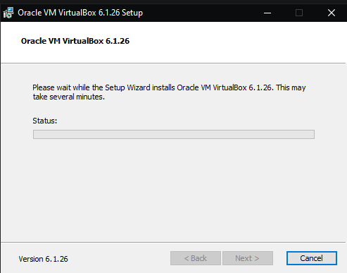
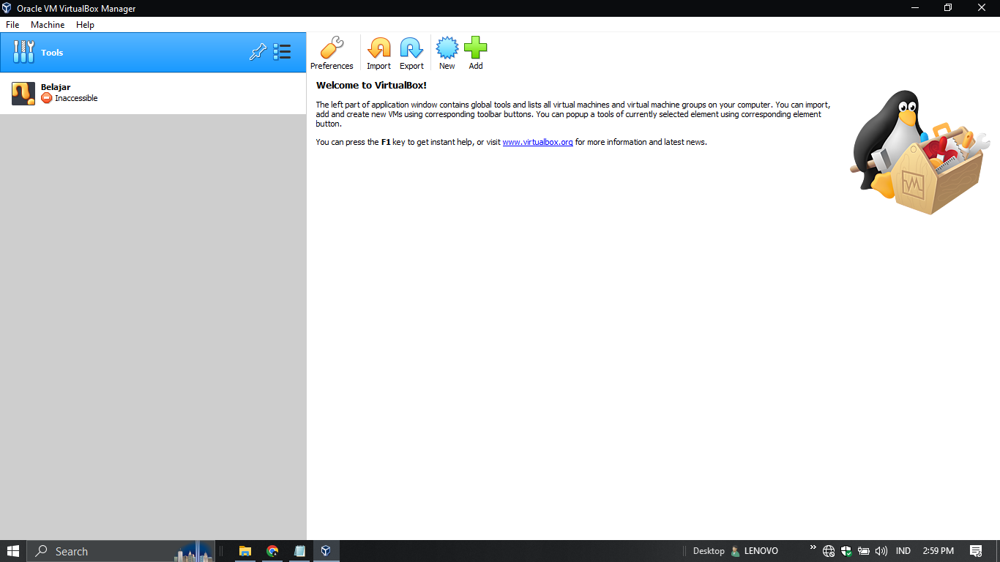
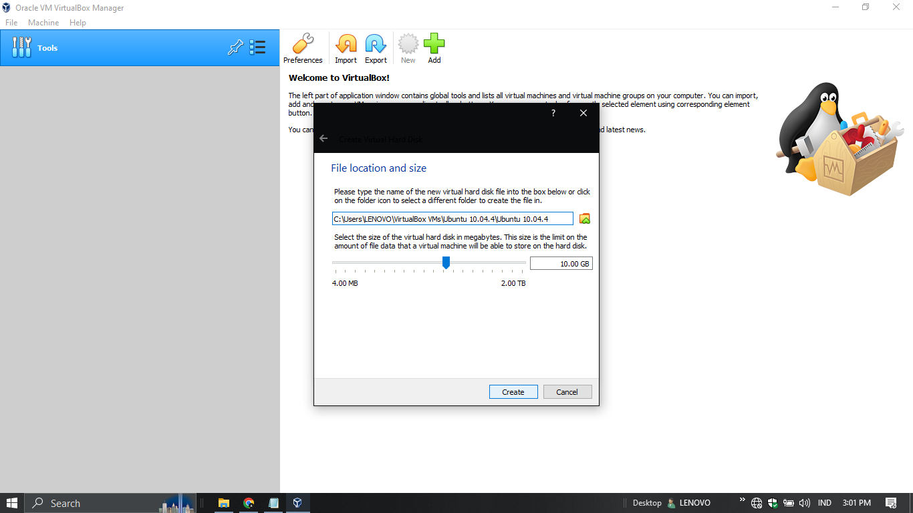
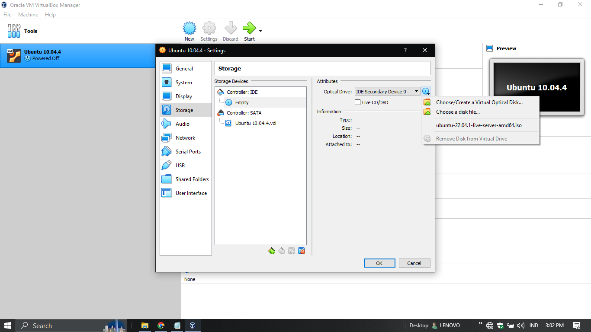
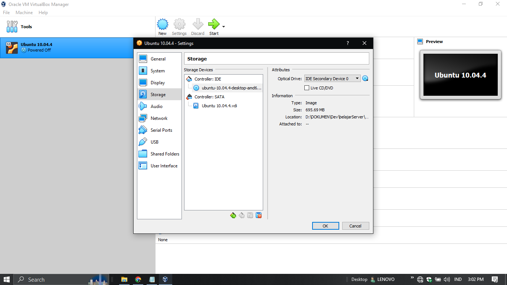
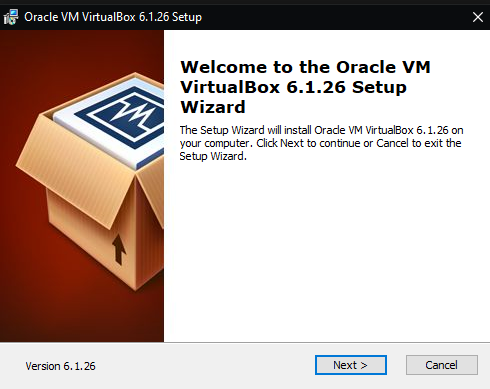
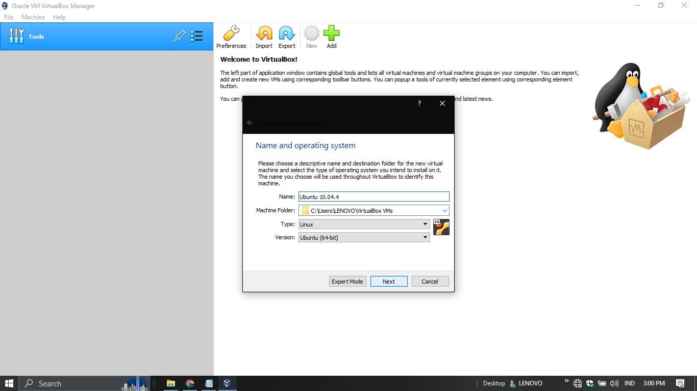
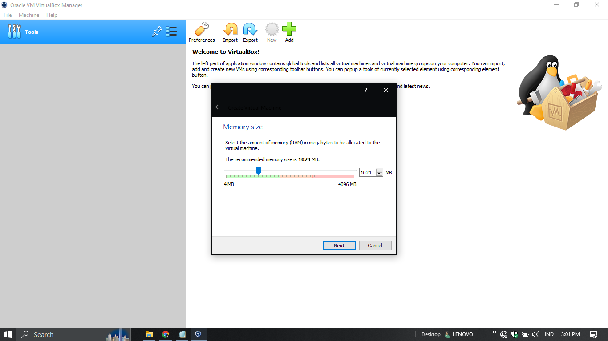
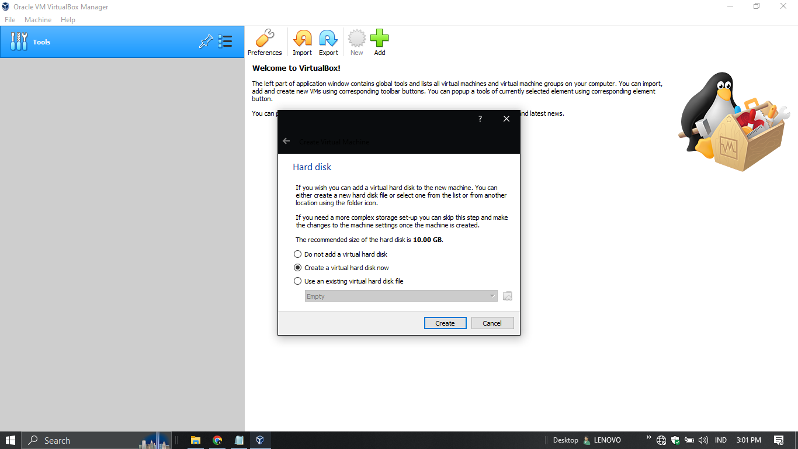
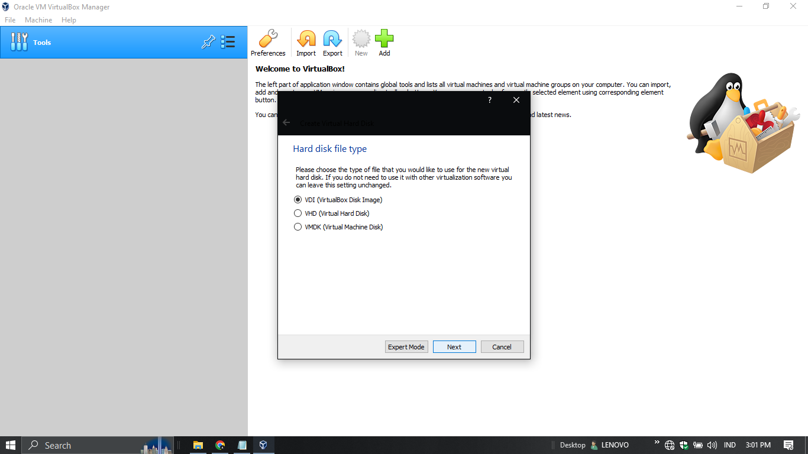

Cara Menginstal Virtual Box Untuk Windows 10
VirtualBox adalah perangkat lunak virtualisasi yang memungkinkan pengguna menjalankan beberapa sistem operasi pada satu komputer secara bersamaan. Blog ini akan menjelaskan dan membahas proses instalasi virtual box dengan menginstal ubuntu didalamnya
Apa sih Ubuntu itu?....
Ubuntu adalah salah satu distribusi Linux yang populer, dikenal karena kemudahan penggunaannya dan dukungannya yang luas. Dikembangkan oleh Canonical Ltd., Ubuntu dirancang untuk menjadi sistem operasi yang mudah diakses dan digunakan, baik untuk pemula maupun pengguna berpengalaman. Ubuntu menawarkan antarmuka grafis yang ramah pengguna, manajer paket yang efisien, dan dukungan untuk berbagai perangkat keras serta perangkat lunak. Tersedia dalam beberapa versi, termasuk versi desktop dan server, Ubuntu sering digunakan sebagai pilihan sistem operasi untuk komputer pribadi, server, dan lingkungan pengembangan. Versi baru Ubuntu dirilis setiap enam bulan, dengan pembaruan LTS (Long Term Support) dirilis setiap dua tahun untuk dukungan jangka panjang.
Alat-alat dan Tools yang perlu disiapkan
berikut adalah list hal yang perli kita siapkan sebelum melakukan praktik instalasi
berikut listnya:
- Kuota
- File Instalasi Virtual Box
- Iso Operation System (OS) yang akan di install
- Kuota
- Kita perlu kuota untuk menginstal kedua keperluan lainnya, kurang lebih siapkan sekitar 10GB kuota, hehehe
- File Instalasi Virtual Box
- Disini saya menggunakan Virtual Box versi 6.1.26 untuk windows 64 bit, namun bila kalian menggunakan versi berbeda, sepertinya tidak ada perubahan yang signifikan untuk instalasi nantinya
virtual box bisa diunduh di laman ini - File ISO Operation Systen (OS)
- Saya menggunakan Ubuntu dalam praktik kali ini saya menggunakan Ubuntu versi Lucid Lynx dengan versi 10.04.4 LTS.
File Ubuntu bisa diunduh di sini - kemudian ikuti instruksi dari wizard sampai proses instalasi berlangsung, hal ini mencegah terjadinya malfungsi pada aplikasi nantinya. 
- Berikut Tampilan awal dari virtual box 
- Klik tombol “new”, lalu pilih sesuai dengan OS yang ingin kita install. Untuk machine folder saran saya buat folder khusus
- ketika kalian klik next pilih Dynamically allocated kemudian masukan jumlah sesuai dengan kebutuhan 
- kemudian pilih file ISO OS Ubuntu 
- setelah dipilih dan dimasukan akan seperti ini 
- Kemudian jalankan dan sesuaikan dengan preferensi anda
Penjelaan dari barang-barang di list tersebut:
Langkah-Langkah Instalasi
1. Siapkan file virtual box dan file iso ubuntu terlebih dahulu
2. Buat Virtual Machine Baru

3. Alokasikan RAM Untuk VM (Virtual Machine)
4. Selanjutnya pilih Virtual Harddisk now
5. Selanjutnya pilih VDI (Virtual Disk Image)
Persiapan Selanjutnya
Kalian sudah melakukan tahap awal untuk menyiapkan Virtual Machine (VM), selanjutnya dalah memasukan file ISO kedalam VM untuk dijalankan